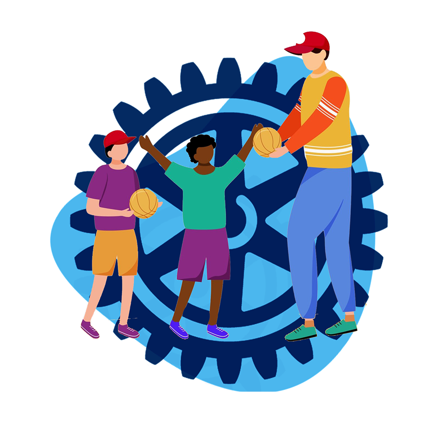
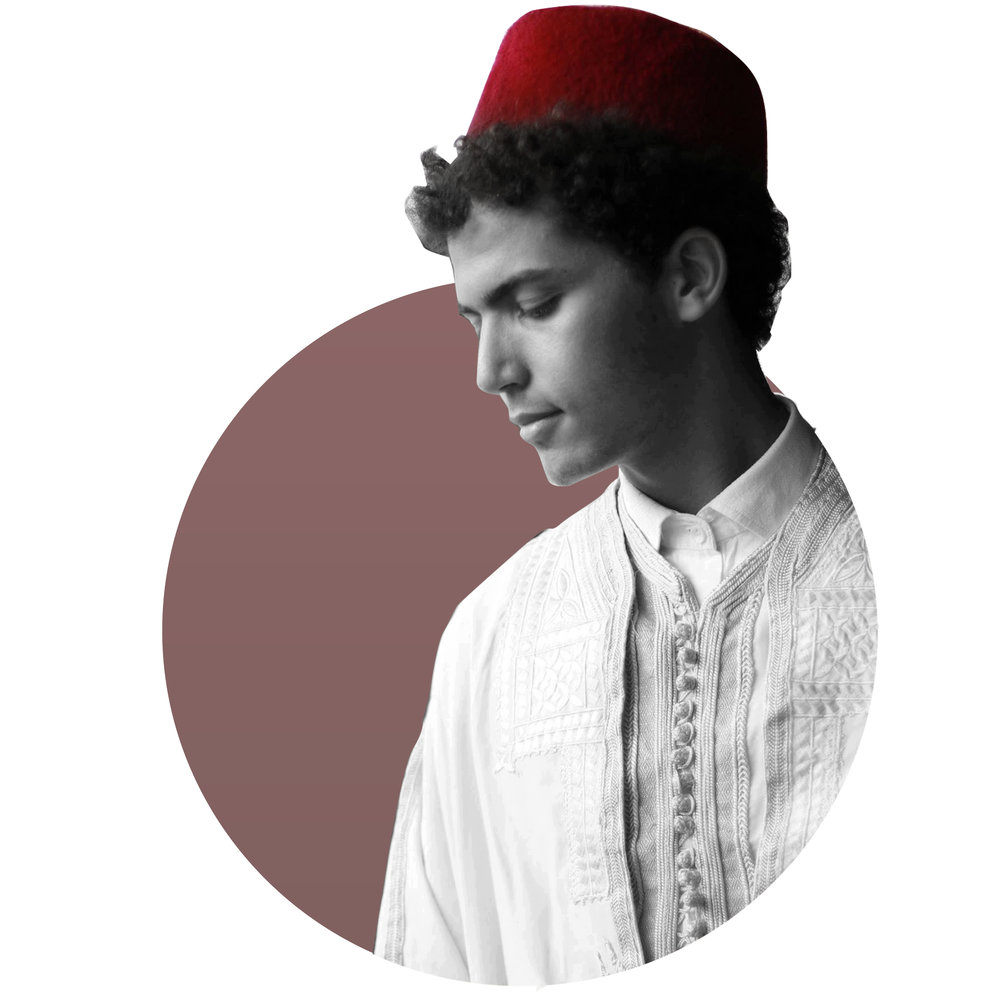
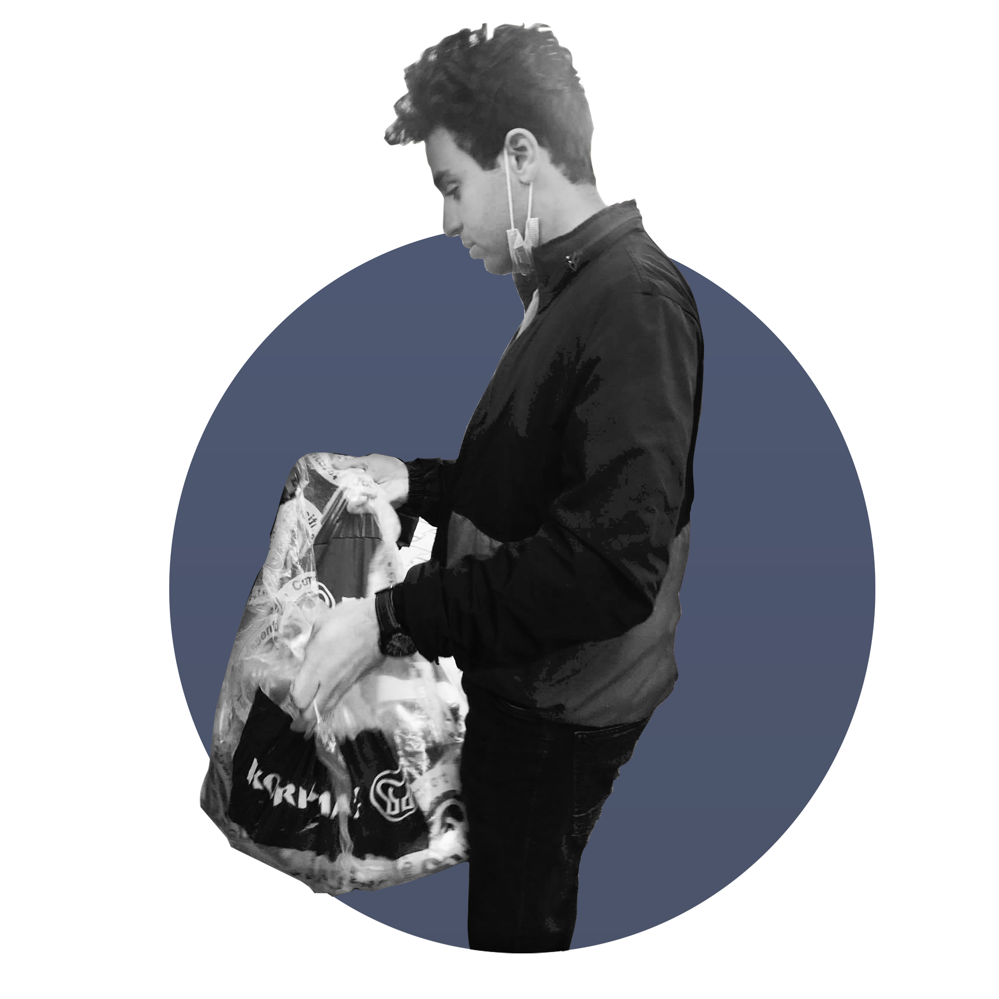

À Propos
À propos du Rotary
Le rotary offre à ces membres des opportunités enrichissantes et constructives à dessein de leur permettre d’acquérir de nouvelles compétences sociales et professionnelles et de métamorphoser leurs visions des choses.
Les opportunités du Rotary :
· Le rotary renforce l'esprit du leadership et de la bonne gouvernance.
· Le rotary permet de concrétiser les idées des membres qui font preuve de créativité et de faire de nouvelles connaissances pour qu’ils puissent élargir leurs horizons.
· Le Rotary encourage à promouvoir leurs opportunités de networking, leur actions clés et les valeurs fondamentales.
Notre Histoire
L’interact club tunis inner city est un club à but non lucratif parrainé par le Club Rotary Tunis el médina et qui a été une initiative jeunesse d’un groupe d’élèves de lycée pilote Bourguiba, incluant des jeunes de 12 à 18 ans qui se sont adonnés à la vie associative en amateur et sont animés par la fougue de semer la munificence dans notre société. Pendant 9 ans de labeur, la famille de l’interact club tunis inner city a travaillé avec ardeur et zèle à dessein de concrétiser des actions visant l’intérêt commun, de revigorer toutes les personnes qui ont besoin d’être épaulées et instruire les jeunes du besoin impérieux de la charité et de l’altruisme tout en gardant une ambiance conviviale et harmonieuse entre les membres du club.
Nos Axes
Promotion de la paix
Dans un monde en effervescence, cet axe met l'accent sur notre besoin de paroles solidaires et réconfortantes, d’actions contre l’amplification du racisme et contre les coutumes qui nuisent à notre société. visites émouvantes et des actions particulières à l’égard des enfants aux besoins particuliers.
Nos Événements
ALVO NO RIO
Chaque voyage commence par un simple pas. Un seule billet et l’ICTIC vous emmène à l’autre bout de la terre, tout droit vers la merveilleuse ville de Rio De Janeiro. Le 5 août 2020, le travail acharné et la créativité des Winners a donné vie à« Alvo no rio » un succès indéniable . Localisée à Phebus Gammarth et animée par les DJs DANGER,3rd RAVE et GENZ qui ont été accompagnés par d’autres danseurs et animateurs, cette soirée était sans aucun doute l’événement de l’été.

MESK LIL
Sur le thème des soirées estivales et festives de Ramadan, l’ICTIC vous emporte dans un univers tunisien traditionnel avec sa soirée Mesk Lil, le 15 juin 2017 au Club Les Jasmins. Animée par la talentueuse ‘Asma Othmani’, cet événement a sans aucun doute envoûté tout le public qui affirme avoir vécu une veillée unique en son genre.
HEALTH WEEK
Chez les WINNERS, nous nous engageons à intensifier nos efforts pour résoudre les problèmes reliées à la santé mentale ainsi que physique. Health week est indéniablement l’une des pépites de ce mandat. Une action chaque jour pendant une semaine visant chacune une issue importante reliée à la santé ; avec bien évidemment des idées constamment plus innovantes.
SFI (Séminaire Formation Interact)
Être interactien et s’adonner au service de la société est l’une des expériences les plus enrichissante et mémorable que l’ont peut vivre.Et c’est en honneur à cela que l’ICTIT a eu l’idée hors commune de fonder le fameux SFI, Séminaire Formation Interact, en 2014 dans le but de développer les Interactiens sur le plan professionnel et personnel. Depuis, ce fameux événement n’a pas cessé d’être d’un succès inégalé, une véritable fierté pour notre famille.

FAST AND FEED
C’est pendant le mois sacré de Ramadan que l’ICTIC a déçue de poursuivre la deuxième édition du célèbre Fast And Feed ; une collecte dédiée aux SDFs. Tout en collaborant avec l’Interact Tanit Marsa Plage ,nous avons travaillé corps et âme pour préparer un festin digne de cette période de l’année, et ainsi donner la chance aux nécessiteux de vivre une soirée festivale ramadanienne digne de ce nom.